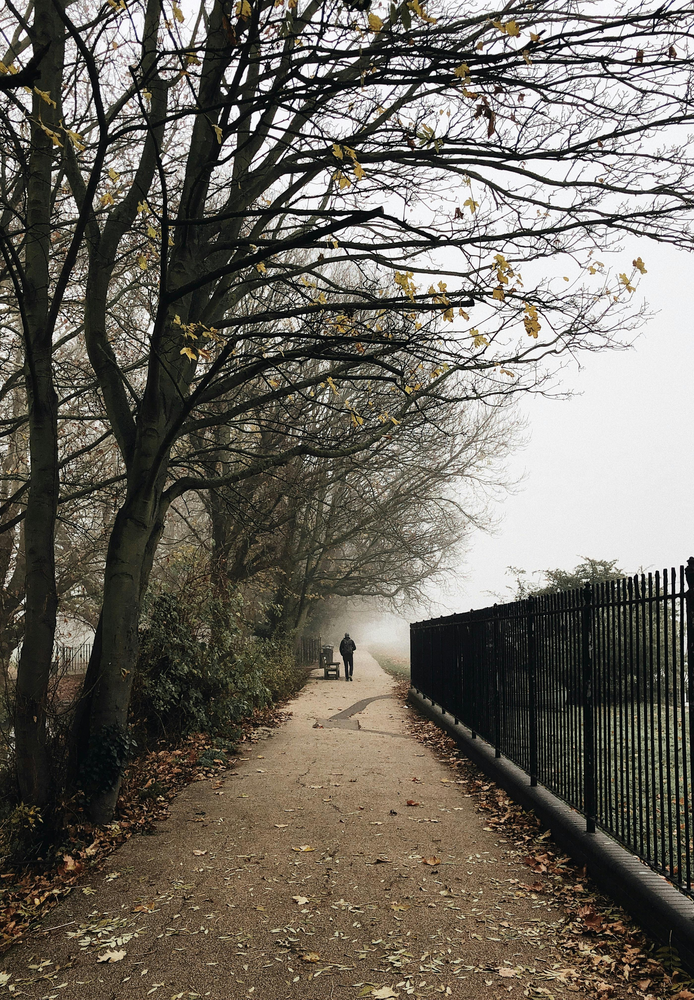

Best Travel Tips

- Best time to visit: Late Spring (May to June) or early Autumn (September to October).
- Use public transport, such as the Tube in London or trains between cities, for easy navigation.
- Check for free museums and attractions, as many offer free admission.
- Learn a few local phrases; it can enhance your experience.
- Consider purchasing a Railcard for discounts on train travel.
Best Cuisines and Dining Recommendations

British cuisine features a variety of traditional dishes. Some favorites include:
- Fish and chips - A classic dish of battered fish served with fries.
- Roast dinner - Typically includes roasted meat, potatoes, and vegetables.
- Full English breakfast - A hearty breakfast featuring eggs, bacon, sausage, and beans.
- Afternoon tea - A light meal with tea, sandwiches, and pastries.
- Shepherd's pie - A savory pie made with minced lamb and topped with mashed potatoes.
Best Accommodation Options

- Luxury Hotels: The Ritz London, Gleneagles Hotel, Scotland.
- Mid-Range: Premier Inn, Travelodge.
- Budget: Hostels like YHA or local bed and breakfasts.
- Unique Stays: Converted castles, cottages in the countryside.
- Airbnb options in major cities for a local experience.
Best Local Culture and Traditions

- Festivals: Notting Hill Carnival, Edinburgh Festival Fringe.
- Traditional music: Folk music and dance, especially in Scotland and Ireland.
- Literary heritage: Explore places linked to famous authors like Shakespeare and Austen.
- Local sports: Enjoy a football match or traditional pub games like darts.
- Cultural institutions: Visit theatres, galleries, and historic sites.
Best Top Tourist Attractions

- Big Ben and Houses of Parliament - An iconic symbol of London.
- The Tower of London - A historic castle on the banks of the River Thames.
- Stonehenge - A prehistoric monument and UNESCO World Heritage site.
- Edinburgh Castle - A historic fortress overlooking the city of Edinburgh.
- The Lake District - A stunning national park known for its lakes and mountains.
- The British Museum - Home to millions of works dedicated to human history and culture.
- Bath - Famous for its Roman-built baths and Georgian architecture.
- The Cliffs of Moher - Dramatic sea cliffs on Ireland's west coast.
Best Transportation Guides

- Public transport: Efficient buses and trains in cities and between regions.
- London Underground: A quick way to navigate London.
- Taxis: Black cabs and ride-sharing services are widely available.
- Biking: Many cities offer bike rental schemes.
- Walking: Explore city centers on foot for a more personal experience.
Best Outdoor Activities and Adventure

The UK's diverse landscapes offer numerous outdoor activities. Popular pursuits include:
- Hiking in national parks such as the Lake District and Snowdonia.
- Cycling along scenic routes and through charming countryside.
- Visiting coastal areas for beach activities and water sports.
- Exploring the countryside with opportunities for wildlife spotting.
Best Shopping and Souvenirs

The UK is a shopper's paradise, with a mix of high-street brands, luxury boutiques, and unique local shops. Must-visit shopping destinations include:
- Oxford Street, London - Famous for its variety of stores and brands.
- Covent Garden, London - Known for its boutiques and market stalls.
- Harrods, London - An iconic luxury department store.
- Royal Mile, Edinburgh - A historic street with shops selling Scottish crafts.
- Bath's Christmas Market - A charming seasonal market with local crafts and food.
Best Weather and Best Time to Visit
- Summer (June to August): Warm temperatures and long days, ideal for outdoor activities.
- Autumn (September to November): Mild weather with beautiful foliage, great for sightseeing.
- Winter (December to February): Cold and damp, but festive atmosphere with Christmas markets.
- Spring (March to May): Pleasant temperatures and blooming flowers, a lovely time to explore.